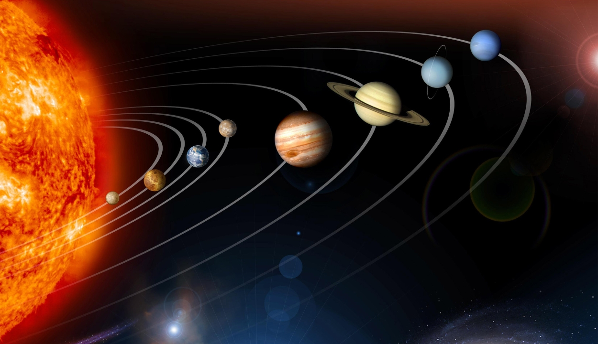
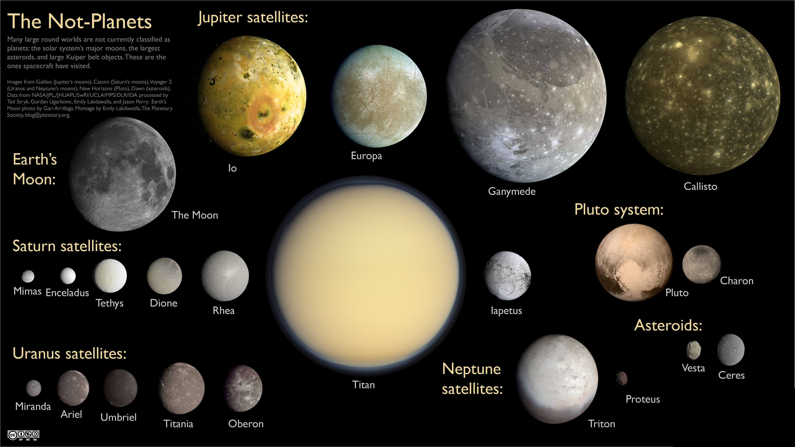

l
o
a
d
i
n
g
.
.
.


A Naprendszer a Nap gravitációja által egyben tartott bolygórendszer, egyike a Tejútrendszer sok milliárd naprendszerének, amely a galaxisunk Orion spirálkarjának nagyjából a felénél, a galaxis közepe és pereme között is hozzávetőleg félúton helyezkedik el. A tudósok csak a XX. században jöttek rá, hogy a Naprendszernek nem a Kuiper-övnél van vége, hanem az Oort-felhőnél. A csillagászatban naprendszer alatt olyan rendszert értünk, amelyben egy vagy több csillag található, és amelyben más égitestek is keringenek. Tanulmányozásával elsősorban az égi mechanika foglalkozik.
Bolygónknak, a Földnek otthont adó Naprendszerünk középpontjában a Nap található. Csillagunk gravitációs térrészén belüli objektumok és kölcsönhatások összessége jelenti a Naprendszert. Központi csillagunk hozzávetőleg 4,6 milliárd évvel ezelőtt alakult ki egy hatalmas gázfelhő gravitációs összehúzódása nyomán. Nem sokkal később, már 4,567 milliárd évvel ezelőtt a csillagkeletkezésnél visszamaradt, a Nap egyenlítői síkjában lapos korongba rendeződött anyagból, a protoplanetáris korongból kialakultak az első kisbolygók, majd bolygók.
A belső naprendszerben négy kőzetbolygó (a Merkúr, a Vénusz, a Föld és a Mars), a külső naprendszerben négy óriásbolygó (a Jupiter, a Szaturnusz, az Uránusz és a Neptunusz) és az öt törpebolygó (Ceres, Plútó, Haumea, Makemake, Eris) alakult ki. A kőzetbolygók kérge szilikátos, a gázbolygók viszonylag kis szilárd magját hatalmas hidrogén–hélium légkör veszi körül, a törpebolygók összetétele jeges kőzet. A Naprendszerben a bolygókon kívül számos kisebb égitest is található. A legnagyobb számú égitest-populáció a két különálló övezetbe rendeződött aszteroidák családja.
A belső aszteroida-öv a Mars és a Jupiter között, a külső ún. Kuiper-öv pedig a Neptunusz pályáján túl helyezkedik el ellipszis alakban a Nap mint gyújtópont körül. Ezekben a övekben található öt olyan objektum, amelyek egy 2006-ban bevezetett égitesttípus ma ismert első tagjai, a törpebolygók. Hat bolygónak és három törpebolygónak természetes kísérői is vannak, ezeket holdaknak nevezzük. A holdakon kívül az óriásbolygók körül gyűrűk, gyűrűrendszerek keringenek. A rendszerben vannak szabadon keringő testek is, ezek az üstökösök, a kentaurok és a mindenütt jelenlévő bolygóközi por. Ezek zömének keringése merőben eltér a többi testétől: vagy elnyújtott ellipszis pályákon, vagy az ekliptikáétól eltérő síkban mozognak.
A Naprendszert teljesen betölti a napszél, a csillagunkból kiinduló folyamatos részecskeáramlás, amely kölcsönhatásba lép az égitestekkel, létrehozva az űridőjárást. A napszél egyben ki is jelöli a Naprendszer határait: hatása a heliopauzáig tart, ahol más csillagok szeleinek sugárnyomása kiegyenlíti a napszél sugárnyomását. Ezt a határt tekintjük a Naprendszer határának, bár a rendszer gravitációs határa messzebbre tehető, hisz még a hozzávetőleg egy fényévnyire levő Oort-felhő is ezen a határon belül van. A Naprendszer határa a Naptól számított 8-10 billió km (kb. 1 fényév).

A törpebolygók közül négy (név szerint a Pluto, Makemake, Haumea és az Eris) jóval túl kering az utolsó nagy bolygó, a Neptunusz pályáján. Keringési idejük ennek megfelelően óriási, 248 és 557 év közötti. A legismertebb törpebolygót, a Plutot sokáig a Naprendszer kilencedik bolygójaként tartották számon, és akkor még Plútónak hívták. Aztán néhány évvel ezelőtt egy Prágában rendezett csillagászati konferencián visszaminősítették szegényt törpebolygónak, mivel nem sokkal előtte azonosították a még nála is jóval messzebb lévő Erist. Róla viszont kiderült, hogy valamivel nagyobb, mint a Pluto. Így ezen a bizonyos csehországi rendezvényen a csillagászok megállapodtak, hogy az Eris inkább ne legyen a Naprendszer tízedik bolygója, sőt a Plútótól is elvették az addigi bolygó besorolását, és megalkottak egy új csillagászati meghatározást: a törpebolygót.
A Neptunuszon túli övezetben a fenti két törpebolygón kívül eddig még két hasonló égitestet sikerült bemérni: Haumeát és a Makemakét. A csillagászati távcsövek és az űrszondák fejlődésének segítségével azonban nem kizárt, hogy a jövőben akár még több tucat törpebolygót is azonosítanak majd a Naprendszer e távoli vidékén. A legkisebb törpebolygó, a Ceres. Az eddigiekhez képest csak „egy ugrásra” van a Földtől, a Mars és a Jupiter pályája közötti aszteroida-övben található.
Nem véletlen, hogy már vagy kétszáz éve ismert a csillagászok előtt, hiszen közelsége miatt a többi törpebolygónál jóval könnyebben megfigyelhető. Tudjuk róla, hogy nagy mennyiségű vizet tartalmaz, felszíni hőmérséklete -35 ºC körüli, így a felszíne jeges. Nem elképzelhetetlen, hogy légköre is van. Átmérője mindössze 950 km. A legfrissebb megfigyelések szerint napközeli pályán haladva sűrű vízpárát is bocsát ki magából.

A csillagászatban holdnak nevezzük a bolygók, törpebolygók és kisbolygók körül keringő égitesteket. Nem mindig könnyű eldönteni, egy objektum-pár melyik tagja a hold. Mivel minden anyagi testnek van gravitációs tere, a bolygó és holdja kölcsönösen vonzzák egymást. Ha a két objektum megközelítőleg azonos tömegű, kettős rendszernek nevezzük őket. Egy példa lehet a 90 Antiope kettős aszteroida. A hold meghatározásának általános kritériuma az, hogy a két objektum tömegközéppontja a bolygó belsejében van.